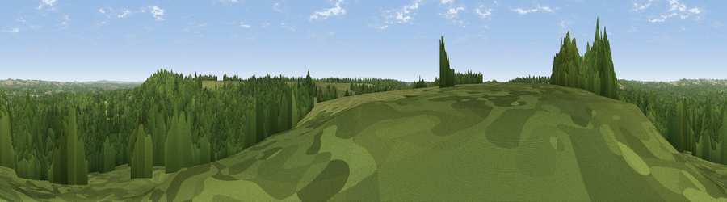

Viewpoint near Nomansland
#36510 in England · top 46% of its area beats it · near NomanslandWhere it is
The exact computed spot (SU 23725 16425). Click the marker for map links.
The view, rendered

A 360° render of this exact spot computed from the terrain model, tree cover and land cover — summer colours, afternoon light, calibrated against photographs of famous viewpoints. Real trees, hedges and buildings will differ in detail.
The panorama
Grey silhouette: terrain skyline in each direction (720 bearings, Earth curvature and refraction included). Dashed green: skyline with trees (+15 m) and buildings (+8 m) as obstacles. Blue strip: how far the ground is visible on each bearing.
Where the view opens
Wedge length = distance to the farthest visible ground on that bearing (vegetation-aware). Rings at 10, 25 and 50 km.
What fills the view
78% woodland · 18% grassland · 4% cropland
Angular shares of the visible panorama (visual magnitude), not map area. Landscape diversity 0.28 (0–1 Shannon).
Key numbers
More beautiful places nearby
The staircase of upgrades: each row has a higher view potential than everything closer. Driving times are estimates from straight-line distance, calibrated against real road routing — check an actual route before setting out.
| Place | Direction | Drive | Score |
|---|---|---|---|
| Viewpoint near Bramshaw | ESE · 3 km | ~6 min | 35.1 |
| Viewpoint near Fritham | SW · 5 km | ~11 min | 38.7 |
| Viewpoint near Frogham | WSW · 6 km | ~13 min | 40.2 |
| Viewpoint near Redlynch | NW · 7 km | ~15 min | 40.8 |
| Viewpoint near West Grimstead | NNW · 8 km | ~17 min | 50.6 |
| Viewpoint near West Grimstead | NNW · 9 km | ~17 min | 54.6 |
| Viewpoint near Laverstock | NNW · 17 km | ~29 min | 58.0 |
| Cockey Down | NNW · 17 km | ~29 min | 60.3 |
50.94678, -1.66366 · source: screening · position refined by local search. Computed location — check access rights before visiting.